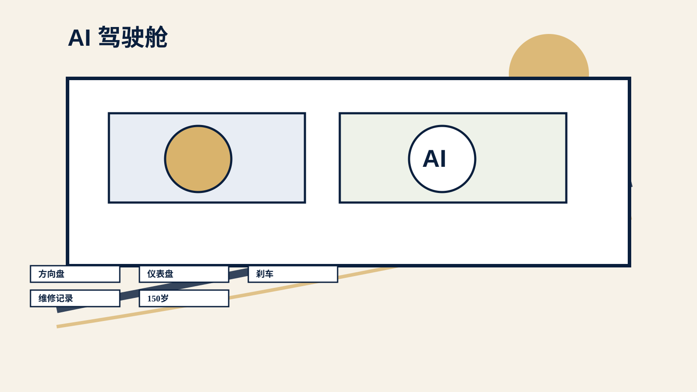
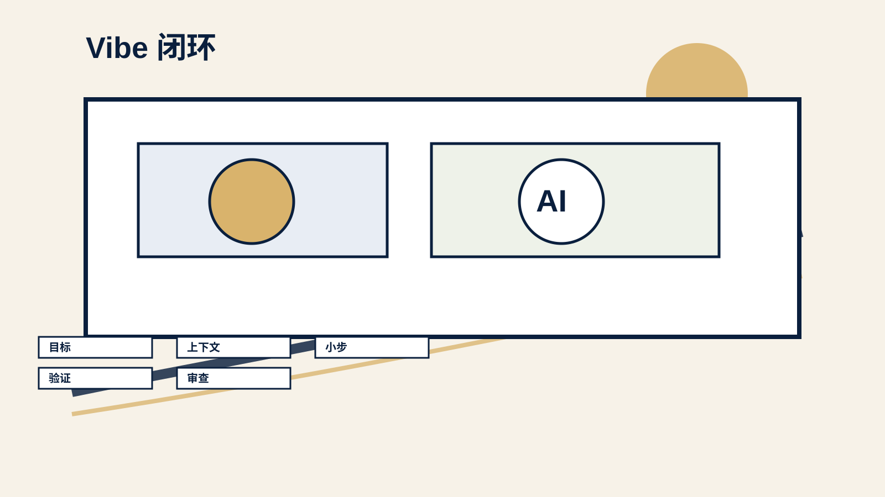
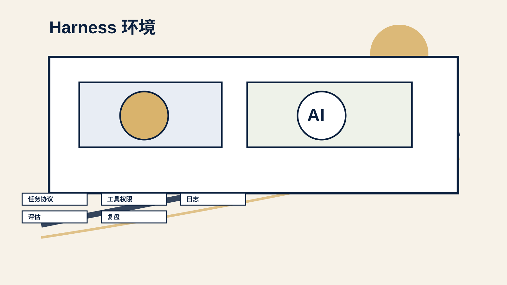
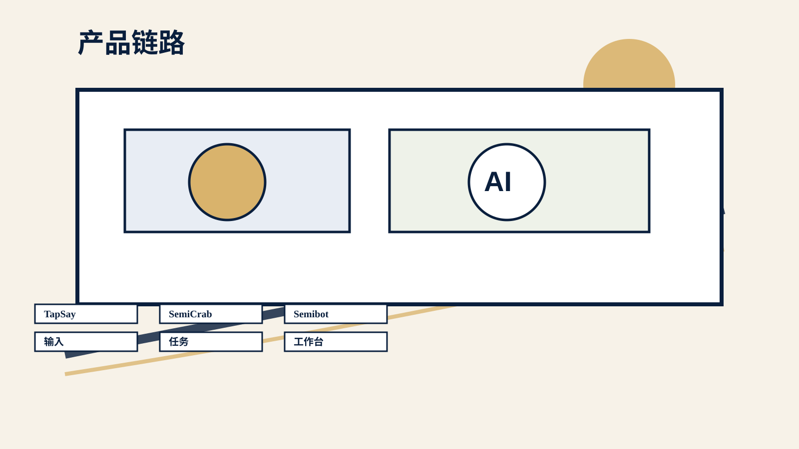
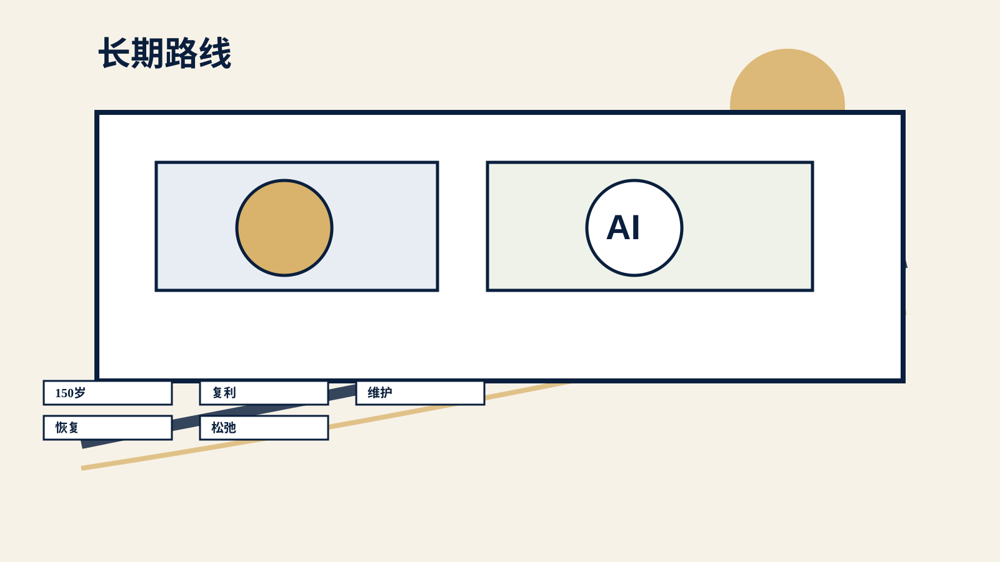

AI 已经像发动机一样强，但发动机不是车。

工具会过时，工作方式会留下来。
如果今天结束后，你没有多记住几个工具名，但开始重新审视自己的高频任务，问自己“这件事能不能变成一个工作流”，那这场分享就有价值。
先把注意力从“用什么”移到“怎么做成”。
AI 改变的不是按钮，而是完成事情的入口。
很多时候，我们以为自己是在讨论一个新工具。但我越来越觉得，AI 真正改变的是“完成事情的接口”。
先看清变化，再谈方法。
技能没有消失，但高价值部分在上移。
这就是从技能到系统的迁移。单点技能让你完成一个任务，系统能力让你持续放大自己。
从单点能力，进入系统能力。
高手不是只会 prompt，而是会编排。
后面讲 Vibe Coding、个人工作台、健康系统、业务飞轮和长期主义，其实都围绕这件事：从使用工具，走向系统编排。
全场主线从这里开始：编排系统。
一次帮忙没有复利，固定流程才有。
多数人停在 Level 2，复利从 Level 3 开始。
多数人现在停在 Level 2。Level 2 已经很有价值，但真正的复利往往从 Level 3 开始。
找到自己下一步要跨过的台阶。
看起来每天都在用 AI，不代表已经有工作流。
所以升级的关键不一定是换更强的模型，而是改变你交付任务的方式。只要你开始要求 AI 先问问题、先读上下文、先出方案、再小步执行，你就已经在往 Level 3 走。
把“帮我一下”改成“和我完成一套流程”。
选一个下周真的会遇到的小任务。
这个动作本身很重要，因为它会把你从“让 AI 帮忙”带到“设计一套 AI 协作流程”。
从此不再临时求助，而是设计协作。
它不是凭感觉让 AI 写代码。
“帮我做个 PPT”不等于交付一场演讲。
所以 Vibe Coding 的重点不是功能本身，而是让 AI 参与完整交付流程。
软件开发也是一样：一句需求不是功能。
提示词是任务协议，不是漂亮话。
很多 AI 输出不稳定，不一定是模型不行，而是任务输入太含糊。你交代得像临时聊天，它就容易生成一个看起来合理但无法交付的东西。你交代得像严肃的工作协议，它就更容易进入正确轨道。
好输入让 AI 进入工作状态。
Vibe Coding 的核心是闭环，不是生成。
这里最重要的一句话是：AI 负责加速，人负责方向、边界和最终质量。

方法再好，也需要驾驶舱。
这也是后面所有非代码场景的关键。个人工作台、健康系统、业务链路、组织协作，本质上都是在给 AI 搭不同类型的驾驶舱。

AI 的危险在于：它经常很像已经完成。
成熟的 AI 协作，不是生成得多快，而是能多快证明它真的可用。
把主观满意改成客观验收。
没有纪律的快，会把问题藏得更深。
越是快，越要小步；越是自动化，越要有证据；越是模型自信，越要保留审查权。
越快越要小步，越自动越要证据。
只要有目标、上下文、执行、验证、复盘，就能迁移。
如果把代码换成文档、会议、项目、健康计划，本质还是一样：你先定义目标，给足上下文，让 AI 参与执行，再用行动项、数据、复盘和人的判断做验收。
方法从代码走向生活和业务。
不要只完成一次任务，要升级下一次任务的起点。
环境一旦稳定，AI 才能从“临时帮忙”变成“固定工作流伙伴”。
个人级 harness 从这里开始。
身体是长期系统的主系统。
这不是医疗建议。涉及疾病、用药、诊断、补剂、极端饮食、高强度训练和身体异常时，应该咨询专业人士。AI 可以帮你准备问题清单，但不能替你做医疗决策。
个人提效只是起点，业务链路才是放大器。
如果 AI 只停留在个人提效，它的价值会被低估。真正大的变化，是它进入业务系统。
从个人工作台，进入业务系统。
AI 不该是一个孤立项目，而是一层新能力。
业务里的 harness 更重要。因为一旦进入客户、收入、数据和品牌，就不能只靠“AI 说得有道理”。你需要数据入口、审批权限、实验分组、指标看板、风险预警、人工复核和复盘机制。否则 AI 只是生成更多方案；有了 harness，AI 才能进入真实业务循环。
真正价值发生在链路里。
未来组织不只是管理更多人，而是编排更多能力。
组织层面的 Vibe Coding，重点不是让 AI 代替所有人，而是让每个任务都有目标、上下文、权限、过程记录和验收标准。人负责方向、授权、审计和最终责任，AI 负责扩展执行能力。这个边界如果不清楚，组织会变得更混乱；边界清楚，AI 才能变成组织能力的一部分。
Agent 进入流程，组织也要有驾驶舱。
不要把趋势讲成预言。
这不是三个孤立产品，而是一条能力链。
所以这三个产品不是插播广告，而是我自己对这套方法论的实践：怎么从“会用 AI”，走到“把 AI 放进产品和系统里”。

方向盘的第一层，是低摩擦输入。
它也体现了边界感：TapSay 不替用户回答问题，不做任务执行，不分析项目。它只整理用户说的话。这种克制很重要，因为好的 AI 产品不一定是什么都做，而是把一条主路径做到非常顺。
先把人与 AI 的入口打通。
一个做任务层 harness，一个做通用工作台 harness。
这也是我为什么说，AI 修行不是工具收藏，而是长期训练和系统建设。
AI 产品不是聊天框越大越好。
产品只是结果，底层是沉淀能力。
150 岁不是寿命预测，而是长期主义压力测试。
AI 提供了更高生产力，但人要决定这种生产力服务什么。我的答案是：服务长期创造力，服务更好的生活质量，服务更稳定的自我进化。
